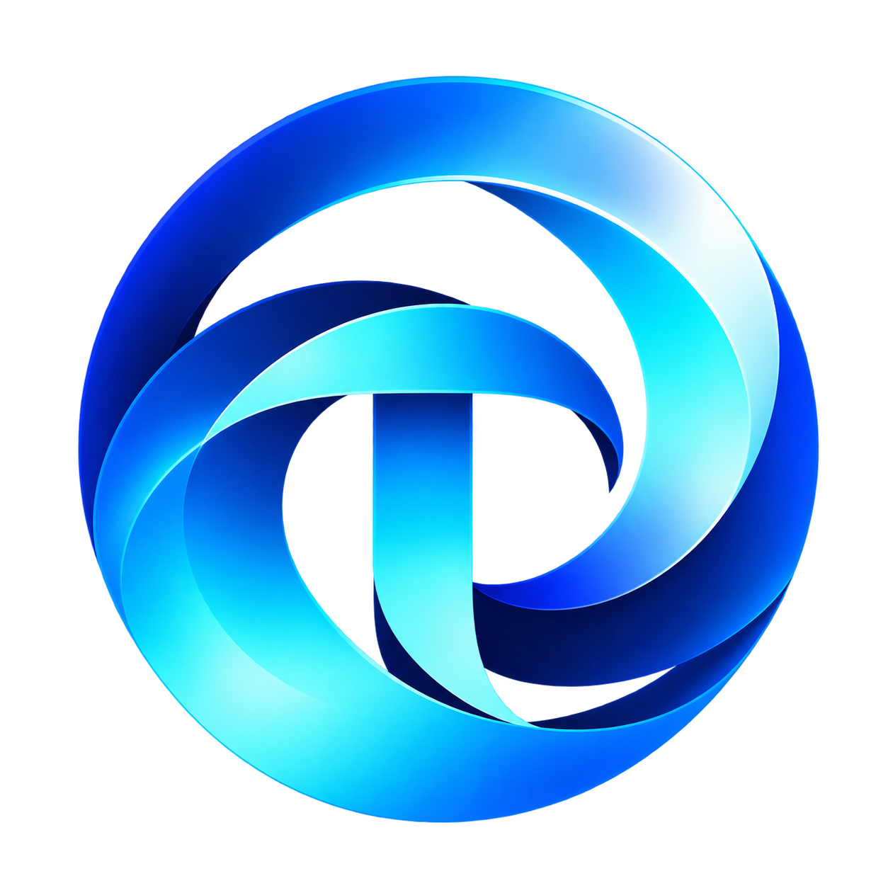
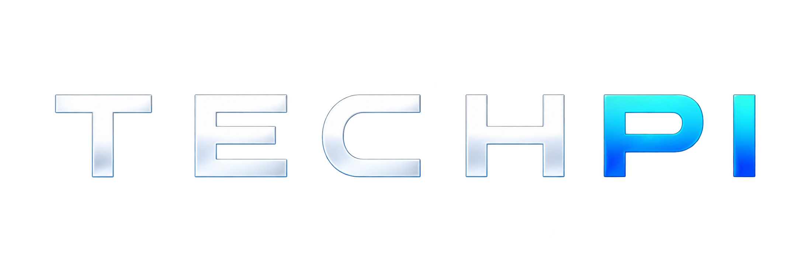

TechPi · Phase 2 · design exploration only
Three decisions: typography, colour system, signature geometry. Everything here is a study. The code is disposable and nothing on this page is a production design.
public/brand/ are raster explorations with edge fringing. Colours were sampled from clean interior areas only. No measurement taken from them is final brand geometry. The logo was not cleaned, redrawn or replaced.
A
Identical content in every candidate, English and modern Greek, on Paper and on Ink.
| Typeface | Status on this board | Notes |
|---|---|---|
| Commissioner | Available for real rendering | Open licence (OFL). One of the three original candidates. |
| Sofia Sans | Available for real rendering | Open licence. Added because it can be tested today. Has Condensed widths. |
| Geologica | Available for real rendering | Open licence. Added because it can be tested today. |
| PF Grand Gothik | Reference only / not available locally | Commercial. Its free trial has no Greek. Not rendered anywhere on this board. |
| Greta Sans | Reference only / not available locally | Commercial. No test files. Not rendered anywhere on this board. |
Sofia Sans and Geologica are not substitutes or look-alikes for PF Grand Gothik or Greta Sans. They are separate candidates. Nothing on this board imitates a typeface that is not loaded.
Finding from the first pass: at a line-height of 1.0, Greek descenders (χ, ρ, γ) touch the accents on the line below. Greek display lines here are set 0.08 looser than the English. The same rule is proposed for the site.
| Typeface | Loaded | Missing glyphs in the test set | UI arrows → ↗ | Greek to Latin weight match, 400 | Greek to Latin weight match, 700 |
|---|
Test set: the full Greek alphabet in both cases, ά έ ή ί ό ύ ώ, Ά Έ Ή Ί Ό Ύ Ώ, ϊ ΐ ϋ ΰ Ϊ Ϋ, ς, the ano teleia, the Greek question mark, guillemets, numerals, &, € and the two arrows. Weight match compares ink density of Greek and Latin lower case. 1.00 means identical. The → arrow reports "falls back" for all three because the Google Fonts delivery used by this board does not serve that character, so the browser draws it from a system font. Commissioner’s release notes list arrows, so this needs re-checking with a self-hosted file before the arrow is relied on. These checks find missing or mismatched glyphs. They do not judge whether the Greek is well drawn. That is the client's review.
| Criterion | Commissioner | Sofia Sans | Geologica |
|---|---|---|---|
| Authority | Strong. Classical proportions read as established | Medium. Narrow and light in colour at text sizes | Strong at display. Wide, heavy presence |
| Modernity | Medium. Humanist warmth, slightly bookish | Medium to strong. Clean, neutral | Strongest. Geometric and technical |
| Greek quality (mechanical view only) | Complete. Weight close to the Latin (0.96). Drawn by a Greek designer. The space before an accented capital (". Ό") looks tight and needs the client’s eye | Complete. Reads evenly | Complete. Wide Greek forms, long lines |
| Readability at 14 to 18 px | Strongest | Good, but small on the body. Needs a size step up | Good, but wide. Fewer words per line |
| Editorial presence at display | Strong and calm | Strongest with Condensed. Normal width is plain | Loud. In the hero study it reads as a startup landing page |
| Enterprise and EU-facing work | Strongest | Good | Medium. Closer to a startup voice |
| Risk of a generic SaaS look | Low | Low to medium | Medium to high. Geometric sans is the SaaS default shape |
Recommendation: Commissioner, in its plain upright voice (flare and volume at zero). Reasons and caveats are in the summary given with this board. The commercial candidates remain untested.
B
What the logo contains, and the calmer set of colours proposed for the interface.
Source colours from logo
Sampled from techpi-symbol-color.png. 41,273 clean interior pixels, at least 10 px from any edge and away from the creases between ribbon faces, grouped into seven. Edge and fringe pixels were excluded. The white symbol was not used.

1 2 3 4 5 6 7Proposed UI colours
Not every logo colour becomes an interface colour. The interface uses one blue, one cyan, and neutrals. The website should be calmer than the logo.
| Logo colour | Decision | Why |
|---|---|---|
| #025EF0 electric blue | Not used as the interface blue | Passes on Paper only narrowly (4.69:1) and reads as electric at full-bleed size. The interface blue is a calmer step between this and #0136BB |
| #07A3FC azure | Not used | A third blue would start a gradient habit |
| #6CEEFC #CBF4FC highlights | Not used | They are the gloss of the 3D rendering, not brand colours |
| #011970 navy | Kept in reserve as "Blue Deep" | A possible second brand surface. Not needed on the homepage |
Light surface · Paper
Technology built around real business needs.
Primary text is Ink. Secondary text is Graphite. Tertiary text and labels are Slate.
Start a project → See selected work
Dark surface · Ink
Technology built around real business needs.
Primary text is Paper. Secondary text is Fog. Cyan appears only here, for links, focus and the arc.
Start a project → See selected work
TechPi blue surface · full bleed
Technology built around real business needs.
Text is Sheet. No cyan text here. Links are underlined, not recoloured.
Start a project → See selected work
Cyan is the thin strip at the end: about 2%. No gradients anywhere in the interface.
| Text | On | Sample | Ratio | Result | Use |
|---|
C
One device: a single flat circle taken from the symbol's outer ring, used at architectural scale. The visitor mostly sees a fragment of it.
D
Three studies, at 1440 px and 390 px. They test hierarchy, whitespace and the arc. They are not homepage designs.
Platforms, applications and intelligent systems, built around how your business works.
See selected workΠλατφόρμες, εφαρμογές και ευφυή συστήματα, χτισμένα γύρω από τον τρόπο που λειτουργεί η επιχείρησή σας.
Ξεκινήστε ένα έργο →Επιλεγμένα έργα
Desktop 1440 × 900, English. Mobile 390 × 844, Greek (draft copy, for the client to review).

EN / ΕΛΕπικοινωνίαΔιαδικτυακή εφαρμογή κατά παραγγελία για [σκοπός και χρήστες προς επιβεβαίωση].
A platform that lets the restaurant take orders directly from its customers.
Desktop in Greek (draft copy). Mobile in English. No metrics. Image areas are honest placeholders, with no invented interface. At rest this section has no arc.

TECHPI EN / ΕΛContactDesktop in English. Mobile in Greek (draft copy). The only centred composition, and the only place the circle is whole. A line, not the glossy logo.
✓
Checked before presenting. One refinement pass was made as a result.
| Question | Finding |
|---|